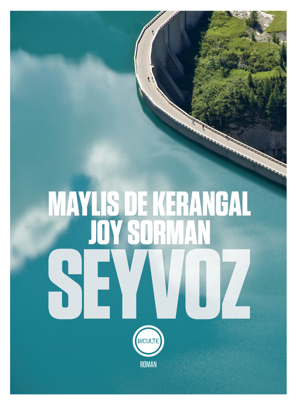
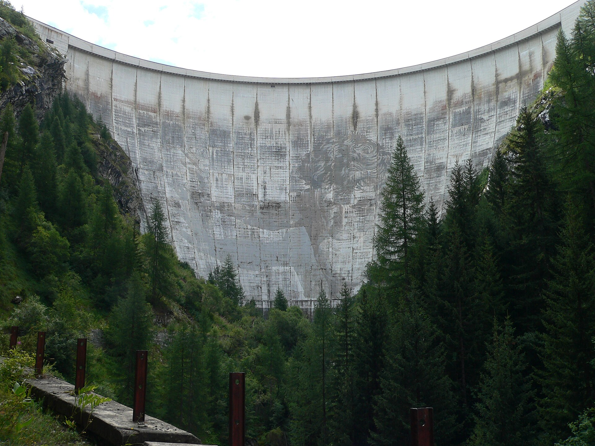

Avant de tomber sur Seyvoz un peu par hasard dans une bouquinerie, je ne connaissais pas Joy Sorman, par contre j’avais déjà beaucoup aimé Naissance d’un pont, un roman de Maylis de Kerangal dans lequel celle-ci raconte la construction d’un grand pont en Californie (sans se priver d’aller dans les détails techniques). Difficile de dire d’où proviennent les idées s’agissant d’un livre écrit à quatre mains, mais le fait est qu’il est également ici question d’un ouvrage nécessitant l’apport d’ingénieurs qualifiés et de très nombreux ouvriers venant d’un peu partout. Après le pont, place au barrage.

Seyvoz est avant tout un village fictif, englouti suite à la construction d’un grand barrage dans les années 50 (qui dans la réalité semble correspondre au barrage de Tignes qui a mené à l’évacuation de la bourgade du même nom). Alors qu’un ingénieur est envoyé sur place de nos jours pour inspecter les installations, il est confronté à une atmosphère étrange, éthérée et quelque peu surnaturelle. Il plane sur la région une absence quasiment hostile qui le laisse désemparé. Par moments, le récit nous emmène assister à des bribes du passé : les ultimes instants du village, la résistance de ses habitants, des drames survenus pendant les travaux colossaux. En somme, pas mal de choses en une grosse centaine de pages. C’est un petit livre qui fonctionne bien, même s’il conserve ses mystères et que je reste quelque peu dans le flou après l’avoir refermé.
Sortie : 2022
Image :